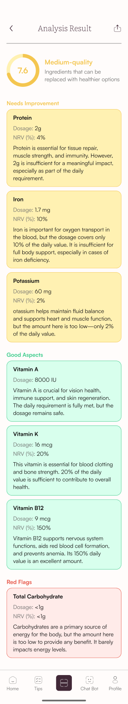
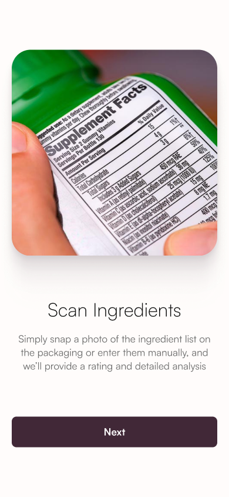
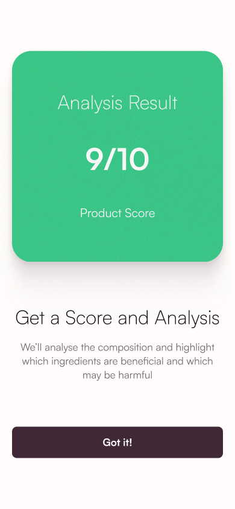
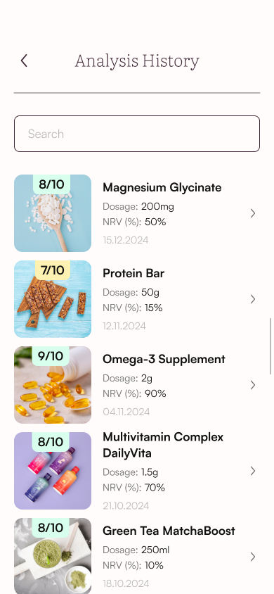
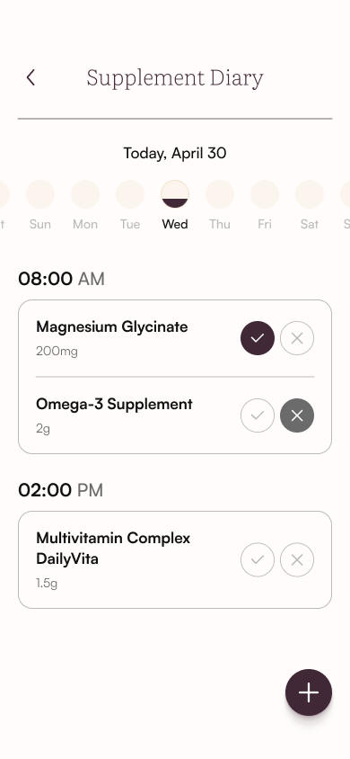
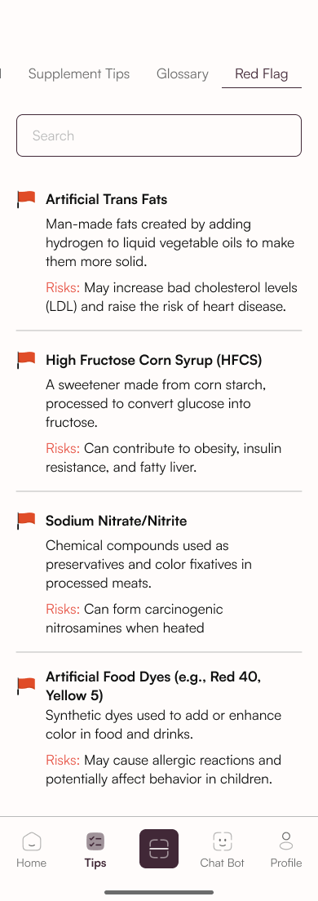

Capture
Scan a label or enter ingredients manually.
Know what’s inside.
Feel good about your choices.
From the label
to the bigger picture.



A clearer view
of every ingredient.
What’s in this supplement?
What do the ingredients mean?
Where do I start?
SafeSupp brings label scanning, ingredient explanations and supplement tracking into one mobile experience. The design makes a dense subject feel approachable, with clear entry points and information in manageable steps.
SafeSupp / Earth’s Secret
UX/UI · Mobile experience
Clarity · Guidance · Continuity
Mobile application
Scan a label or enter ingredients manually.
Read the score, then explore the ingredient breakdown.
Revisit analyses and organise a daily supplement routine.
The introduction explains what to scan and what the analysis will reveal before asking people to take their first photo.
A focused message on each screen.
One obvious next step.


A dedicated scanning area keeps the task focused. A visible manual-entry option gives people another route when the label is difficult to capture.
A clear frame guides the camera.
Manual entry stays within reach.
The analysis pairs an overview with an ingredient-by-ingredient explanation. Three labelled categories give the long result a consistent, scannable structure.
Positive findings, grouped together.
Details that deserve a closer look.
Concerns made easy to locate.
Colour supports the message.
Written labels carry the meaning.
Saved analyses, a supplement diary and educational content extend the experience beyond a single result.

Keep previous scans close.

A place for your supplements.

Learn at your own pace.
A clean sans serif for navigation,
actions and ingredient information.
A light serif for headings
and a more editorial rhythm.
Dark plum anchors the interface. Jade identifies the scanning action. Soft semantic surfaces organise the results.
BASED ON THE APPLICATION’S FIGMA STYLES
